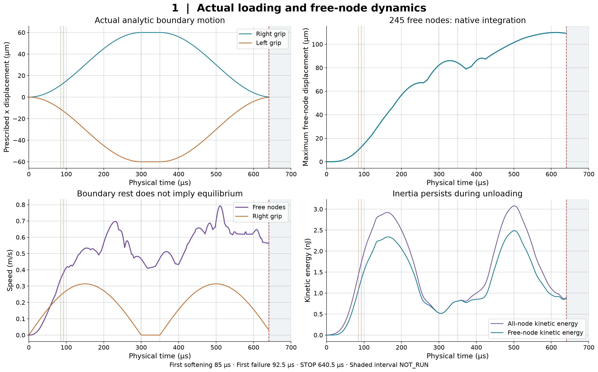
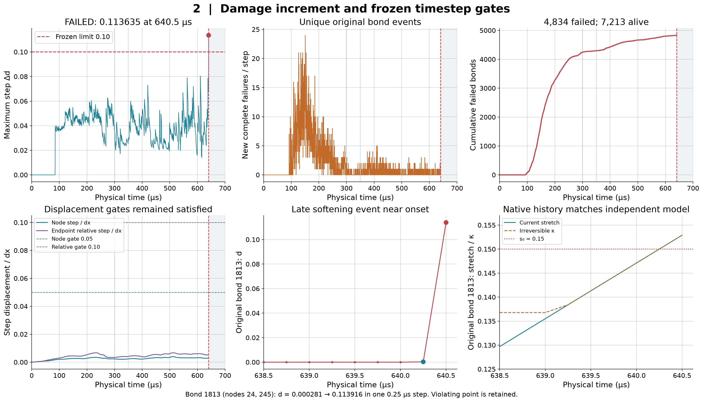
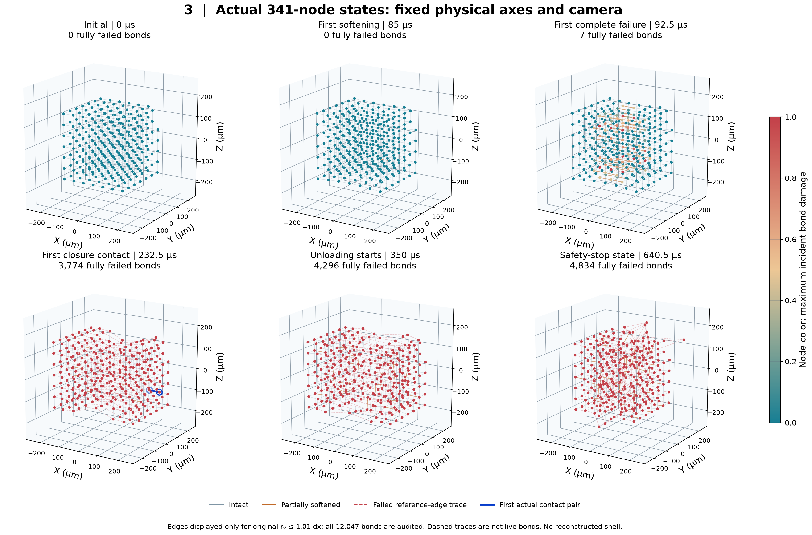
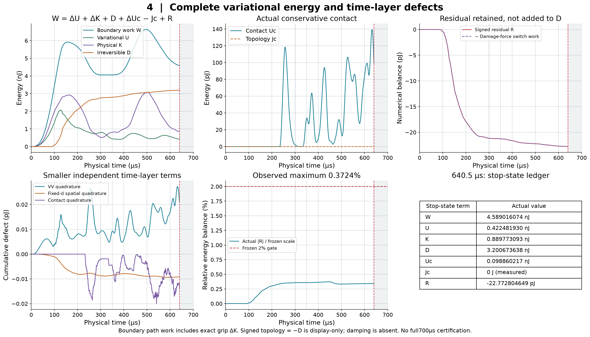
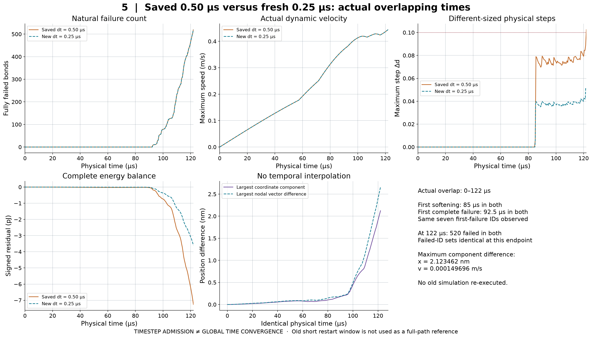
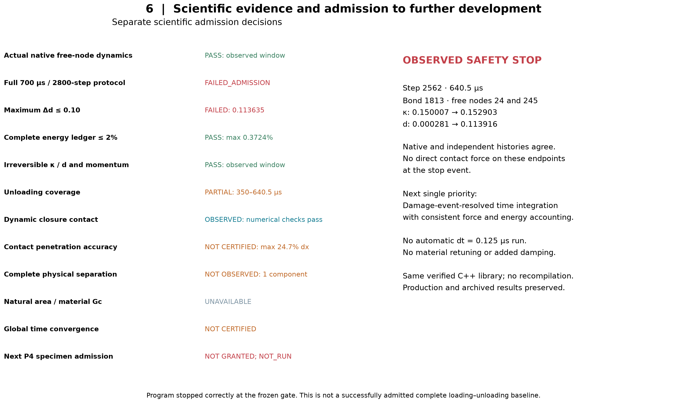

FAILED_ADMISSION：第2562步、640.5 µs，原始键1813的Δd=0.113635超过0.10，立即停止。最后合格状态640.25 µs；700 µs未完成。
完整力/能量/历史与动量在已观察窗口内一致；动态接触已发生，最大重叠24.7% dx的物理精度仍未认证。材料Gc、新生裂面面积及宏观强度不可用。
完整中文报告（36问） · 独立验收状态 · 原始越界现场
Only actual native states; no continuation through the unexecuted final interval.
PNG · SVG
Safety stop is a late new-softening event; no curve clipping or threshold relaxation.
PNG · SVG
True x and native d at six observed events. Fixed camera and equal physical scale. No unseen unloading/end state.
PNG · SVG
Every recorded step checked against frozen complete variational energy. Physical dissipation and numerical force-switch work are separate.
PNG · SVG
Only matching physical times are compared; neither event sequences nor nonlinear trajectories are forced to coincide.
PNG · SVG
Implementation consistency, protocol failure, observed contact, convergence and material calibration remain separate decisions.
PNG · SVG